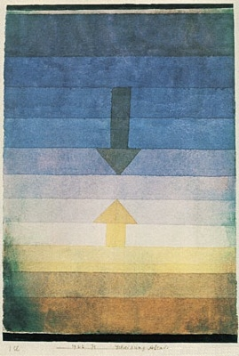
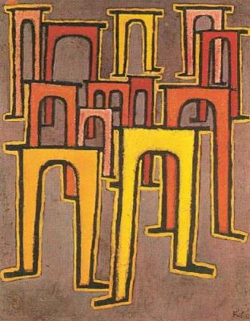
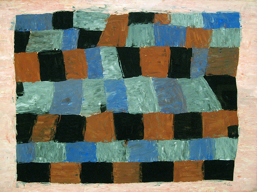

Horizontal Software DevelopmentPeter Keane, UT Austin[ Here are notes about the slide. You can view these by turning off page styles. ] Buzzwordssystems thinking principled design layered architecture loose coupling domain-driven design Horizontal Software Developmentis an approach to software development that emphasizes layers of functionality. Layers can be built upon, reconfigured, and independently evolved to address current and emerging needs. Horizontal development operates in a context of forces, constraints, objectives and resources. The Context
[ what, where, when, why, who, how. ] Horizontal Software Developmentis not a recipe, set of hard-and-fast rules, discipline, etc. It is rather a set of principles, an approach, that can be applied in many instances and in many guises in order to allow certain (desirable) properties to emerge. Desirable Properties
Why is horizontal development particularly difficult in libraries? Because libraries are based on a different set of assumptions & guiding principles: verticality, expertise, top-down order & structure, resting on unchanging technologies and realities. [ note that these are FORCES that need to be reckoned with admitting ARE and not simply WERE is acknowledgement of forces ] Information technology in general and the Web in particular changed that. The ContextForcesPaul Klee: Separation in the EveningConstraintsPaul Klee: Revolt of the ViaductsObjectivesPaul Klee: Rhythmical, More Rigorous and FreerResourcesfrom "how" to "what"from imperative to declarativeincreased emphasis on "interface" or "service"A Word on DependenciesExamples |